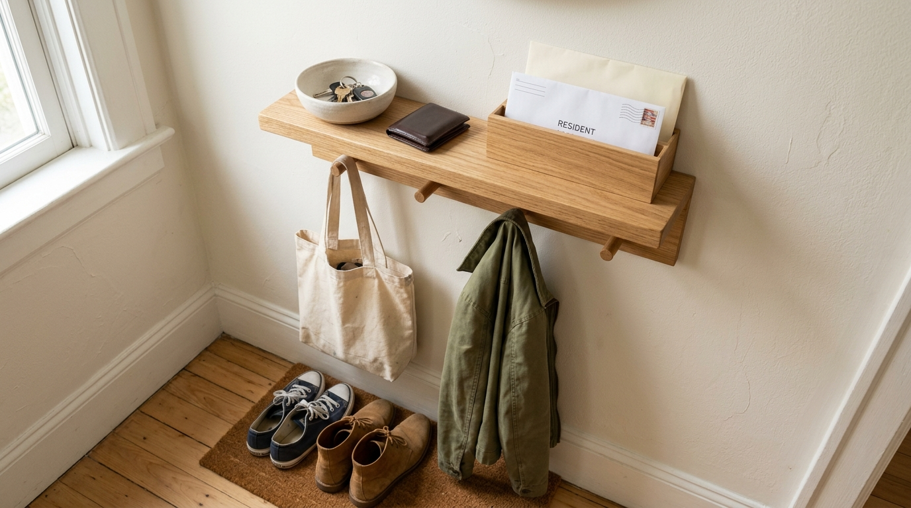

Think about what happens the moment you unlock your front door after being out all day. In the span of thirty seconds, you cross the threshold carrying half a dozen completely unrelated objects:
- A set of house and car keys in your hand
- A tote bag or work backpack over your shoulder
- A jacket or sweater you are ready to peel off
- Shoes you step out of immediately
- A handful of paper mail, circulars, or a delivery package
Because all of these items arrive together at the exact same second, our natural instinct is to treat them as a single arrival category and set them down on the nearest flat surface. In a small apartment, that usually means the kitchen island, the dining table, or the entryway floor.
Within two days, that single drop zone expands into a chaotic pile. You find yourself hunting for car keys under unopened grocery flyers, tripping over sneakers in the hallway, and moving tote bags off chairs just to eat dinner.
The problem is rarely that your apartment lacks entryway storage. The problem is that incoming items arrive together but belong in different destinations. Without a clear "first stop" for each arrival type, everything defaults to temporary clutter.
The Entryway Landing Zone System introduces a simple transition workflow: CARRY → WEAR → SORT. By separating what you carry from what you wear and what needs sorting, incoming clutter stops before it ever enters your living space.
Why Entryway Clutter Keeps Coming Back
In most homes, entryway disorganization does not happen because people are lazy—it happens because of an arrival bottleneck:
- Simultaneous Arrival: You enter with full hands and low mental energy. Making five distinct storage decisions while standing in a cramped doorway feels overwhelming.
- The "Temporary Holding" Trap: Setting an item down "just for a minute" creates a visual precedent. Once one item sits on a counter, others naturally follow.
- Unclear Next Actions: Mail and packages linger near the door because they don't have a defined processing station, blocking space needed for everyday keys and bags.
An entryway is not a long-term storage closet—it is a transition point between the outside world and your home. When you give each arrival type an immediate first stop, you eliminate the cognitive friction that creates surface clutter. For a deeper look at keeping walking paths clear, read our guide on the entryway traffic flow rule.
The CARRY → WEAR → SORT System Explained
The Landing Zone System divides everything entering your apartment into three distinct streams:
CARRY → WEAR → SORT

Here is what each category handles in practice:
1. CARRY — Everyday Personal Essentials
These are the core items that leave and return with you on every trip:
- House and car keys
- Wallet and transit pass
- Everyday handbag, backpack, or tote
- Sunglasses and work badge
First Stop: A shallow dish, drawer, or dedicated peg right beside the door where they can be deposited in one second without opening cabinets.
2. WEAR — Outerwear & Footwear
These are the clothing layers removed immediately upon entering:
- Current seasonal jacket or coat
- Everyday shoes or boots
- Hat, scarf, or umbrella
First Stop: Sturdy wall hooks, a narrow shoe mat, or the front section of an entryway closet.
3. SORT — Items with a Future Destination
These are temporary arrivals that belong somewhere else in the apartment or require an action:
- Paper mail and utility bills
- Delivery packages and parcel boxes
- Items to return to friends or stores
- Dry cleaning or outbound recycling
First Stop: A designated temporary landing tray or basket where they stay until your evening reset.
"Your entryway may not need more storage. It may simply need clearer first stops."
How to Create a Landing Zone Without Buying More Storage
You do not need to buy an expensive entryway hall tree or custom cabinetry. You can establish the CARRY → WEAR → SORT workflow using surfaces and furniture you already own:
Establishing Your 3 First Stops
For CARRY Items:
• Repurpose an existing ceramic cereal bowl or small plate on a console table or shelf as a key dish.
• Use the top drawer of a nearby dresser or credenza.
• Designate one existing wall peg or adhesive hook exclusively for your daily tote bag.
For WEAR Items:
• Reserve 2–3 existing wall hooks strictly for current daily coats (store off-season jackets in bedroom closets).
• Place a simple low mat or designated floor space beside the door for active shoes.
For SORT Items:
• Use a slim magazine holder, desktop letter tray, or small shallow basket on a shelf.
• Designate one corner of an entryway bench strictly for outbound packages.
To see how physical furniture layout pairs with this workflow, explore our companion guide to creating a small entryway Hang, Sit & Store zone.
How the System Works When You Walk Through the Door
When your first stops are established, your arrival sequence becomes automatic:
- Step 1 (WEAR): Kick off your shoes onto the mat and hang your jacket on the peg (5 seconds).
- Step 2 (CARRY): Drop your keys into the ceramic dish and hang your tote bag on the adjacent hook (3 seconds).
- Step 3 (SORT): Place incoming mail or small packages into the sort tray (2 seconds).
In less than fifteen seconds, your hands are completely free, zero clutter has migrated to the kitchen or dining table, and every item is parked in its designated transition home.
This natural sequence aligns directly with the point-of-use storage rule, ensuring items live exactly where the activity happens.
The 30-Second Entryway Reset
The landing zone stays clear when you perform a quick evening or morning reset:
- Process the SORT Tray: Recycle junk mail immediately, place bills in your workspace, and open packages.
- Limit Active WEAR Items: If three jackets have accumulated on hooks, return two of them to your main bedroom closet, leaving only tomorrow's coat.
- Verify CARRY Readiness: Make sure keys, wallet, and sunglasses are in the dish so your morning departure is completely seamless.
How to Keep the Landing Zone From Becoming a Dumping Ground
A landing zone fails when it transitions from an active transfer station into permanent dead storage. Keep these boundaries in place:
- The 48-Hour Rule for SORT Items: Packages and mail should never sit in the entryway sorting tray for more than two days. If an item doesn't have an immediate home, decide its destination or discard it.
- Strict Capacity Limits on CARRY Dishes: A key bowl should hold keys, a wallet, and sunglasses—not loose receipts, expired coupons, and stray coins.
- No "Mystery Drop Piles": If something doesn't fit CARRY, WEAR, or SORT, walk it directly to the room where it belongs rather than leaving it by the door.
For more strategies on vertical surfaces, review our complete guide to entryway wall storage in small apartments.
Small-Apartment and Renter-Friendly Applications
If your front door opens directly into a living room or narrow hallway with zero dedicated entryway foyer, apply these compact adaptations:
- The Back-of-the-Door System: Hang a damage-free over-door multi-hook organizer on a nearby closet door to handle CARRY bags and WEAR jackets.
- The Floating Ledge: Install a single 4-inch deep floating shelf with a small dish and mail slot to create a complete landing zone without taking up floor space.
- The Credenza / Side Table Combo: If your door opens into the living room, use the end of a living room media console or side table as your first-stop zone.
For tight hallway layouts, check out our guide on how to organize a narrow entryway without making it feel smaller.
Before and After: What Actually Changes?
Notice how defining arrival categories transforms the flow of an apartment:
| Arrival Type | Before (Unsorted Drop Zone) | After (Landing Zone System) |
|---|---|---|
| Keys & Small Items | Kitchen counter or buried under mail | CARRY dish right beside the entrance door |
| Jackets & Shoes | Draped over sofa backs and scattered on hallway floor | WEAR hooks and dedicated shoe mat |
| Mail & Parcels | Piles on dining table for weeks | SORT tray processed during daily resets |
| Kitchen Surfaces | Constant clutter from incoming items | Remain 100% clear for cooking and dining |
To keep kitchen surfaces clear of migrating items, explore our guide on how to keep kitchen counters clear.
The Simple Rule to Remember
Whenever you walk through your front door with full hands, remember the three streams:
CARRY → Keys • Bags • Wallet
WEAR → Jackets • Shoes • Hats
SORT → Mail • Packages • Items Going Elsewhere
Give incoming items a clear first stop before they spread across your home.
For more space-saving entryway ideas, explore our full collection of entryway organization ideas.
Frequently Asked Questions
If your front door opens directly into the kitchen or living room, use the wall space immediately behind the door. A slim floating ledge (4–5 inches deep) with a catchall tray and three hooks creates a complete landing zone without eating into your living space.
Assign individual hooks and keep the physical container for the SORT category small. When a mail tray or shoe mat has a defined physical boundary, overflowing items become an immediate visual cue to reset.
A landing zone is a high-speed transition station for items used daily (keys, today's bag, today's jacket). An entryway closet is for storage (off-season coats, sports gear, vacuum cleaners). Keeping them separate prevents daily items from cluttering deep storage.
Are you 18-24 or a Student? Get 6 Months of Prime for $0!
Limited Time Offer (Ends Oct 9): Enjoy fast, free shipping, unlimited streaming, $0 food delivery (Grubhub+), fuel savings (10¢/gal), Prime Reading, unlimited Amazon Photos storage, and exclusive grocery deals. Claim your 6-month free trial of Prime for Young Adults today.
Try Prime for Free →